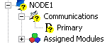
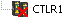

Hardware alarms overview
Workstations, logic solvers, and controllers have a variety of conditions that indicate potential integrity problems. When detected, these conditions set OINTEG to BAD on the subsystem where that condition was detected, as well as for that node. This is shown in DeltaV Diagnostics.

When a node is not communicating, it is shown in DeltaV Diagnostics as

The conditions that set OINTEG to BAD and the detection of no communication can also generate DeltaV hardware alarms. For hardware alarms, each condition is defined by the system in either one of the following alarms (or defined to not generate an alarm):
Not Communicating (COMM_ALM) - The node or card appears to not be communicating. This means that no other conditions can be detected. This also means any displays associated with this node or card cannot be opened for the operator.
Failed (FAILED_ALM)- The node or card is communicating but important functions are not operable or there is a loss of control functions.
Maintenance (MAINT_ALM) - All functions are working, but attention is required; for example, a redundant partner is not available.
Advisory (ADVISE_ALM) - A single condition on the hardware is detected, such as an I/O channel's OINTEG is set to BAD is detected.
Control module conditions that set OINTEG do not generate a hardware alarm.
Certain active conditions can encompass other conditions This is done to reduce the number of conditions being reported. For example, if an I/O card stops communicating to the controller, that alarm condition is reported and any other previously active conditions on that card, such as a bad I/O channel condition, are cleared.
All active hardware conditions for a node are displayed in the Conditions Summary application. Any active condition that should not cause a hardware alarm can be suppressed in this application. Suppressed alarms (either shelved, out of service or both) are also displayed in the Conditions Summary application. The Conditions Summary application can be accessed from either DeltaV Diagnostics or DeltaV Operate (from the hardware alarm list or node faceplate).
Loss of communications is detected by the workstation expecting the communication. When a workstation determines it has lost communications with another node, it sets the COMM_ALM alarm. This alarm is displayed on that workstation. Suppressing the COMM_ALM is only suppressing it on that specific workstation. Therefore, if you suppress a COMM_ALM for a controller on one workstation, the alarm is unchanged on any other workstation.
- The workstation must have Restrict on-line changes to areas assigned to the Alarms & Events subsystem of this station disabled
- The user must have the “Alarms” lock for the area specified in the ProfessionalPLUS’ Associate Alarms & Events with Area field.
Enabling DeltaV hardware alarms on a node or suppressing a hardware condition does not impact the OINTEG status or presentation. DeltaV applications such as DeltaV Operate (depending on configuration settings), DeltaV Diagnostics, and DeltaV Explorer present the OINTEG status.
Each node's Associate Alarms & Events with Area is defined in its Properties dialog. The default association is Area_A. As with all alarms, nodes report hardware alarms to all workstations which have the nodes' areas assigned to them. Of the nodes assigned due to their area association, any node detected as having a communication problem will annunciate on that workstation, regardless of the alarm scope of the current DeltaV user.